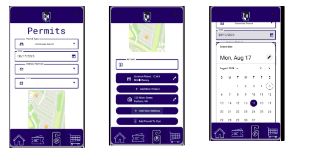
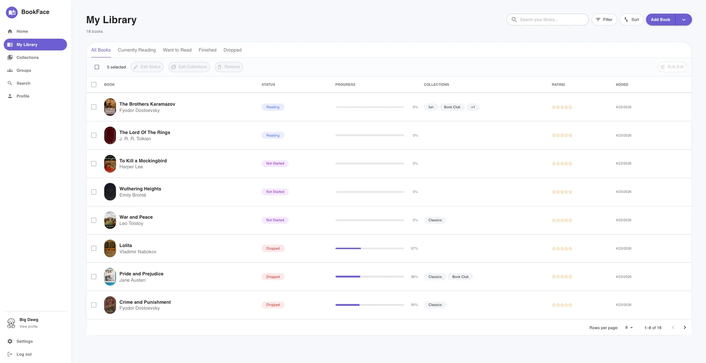

Projects
These are the main assignments from the course. Each project helped me
practice a different part of the HCI design process.
Demo Video:
Design Sprint: Gestural Interaction
In this design sprint, I explored how hand gestures can be used as an
alternative way to interact with digital interfaces. My group redesigned
the controls for the game 2048 so that instead of using a keyboard, users
could perform hand gestures like pointing, thumbs up, and open palm to
control movement. We selected gestures based on how easy they were to
perform and how clearly they could be recognized by the system. Through
testing, we refined our gestures to make them faster, more comfortable,
and less likely to be misinterpreted. This project helped me think more
about usability, efficiency, and how small interaction decisions impact
the overall user experience.
View design doc on Notion

Designing for Others
In design sprint 1: Designing for Others, I worked on redesigning the UNH Parking Services web portal
for commuter students, with a focus on improving the mobile experience. We
started by conducting user research, including interviews with a commuter
student, to better understand common frustrations with the existing site.
We found that the current design was difficult to navigate, text-heavy, and
unclear when completing tasks like buying permits or paying tickets.
Using these insights, we created sketches, paper prototypes, and a final
interactive design in Figma that focused on clarity, speed, and ease of use. We
simplified navigation, reduced unnecessary information, and organized content
using visual hierarchy and grouping principles. This project helped me better
understand how user research and iterative design can lead to more usable and
efficient interfaces.
View design doc on Notion

Designing for Usability
In Design Sprint 3, we were asked to run an evaluation to test the usability
of a user interface of our choice. I chose Goodreads, a social networking
platform for book lovers that is mainly used to review books, track reading
progress, and connect with other readers. I selected this interface because
I felt it had a lot of potential for improving usability. Based on my own
experience, I often found Goodreads frustrating to use, especially when
reviewing and rating books, which made it a strong candidate for redesigning
and optimizing the overall user experience.
I began by conducting a heuristic evaluation using Nielsen’s usability
principles to identify key issues, such as inconsistent interactions,
confusing organization, and limited error prevention. Based on these findings,
I redesigned the interface and created a functional version called “BookFace,”
focusing on making common tasks more efficient and easier to use.
I then evaluated both the original and redesigned interfaces using timed tasks
and usability surveys. The results showed that my redesign improved efficiency
and user satisfaction. This project helped me better understand how usability
evaluation can guide design decisions and lead to more effective interfaces.
View Design Doc on Medium